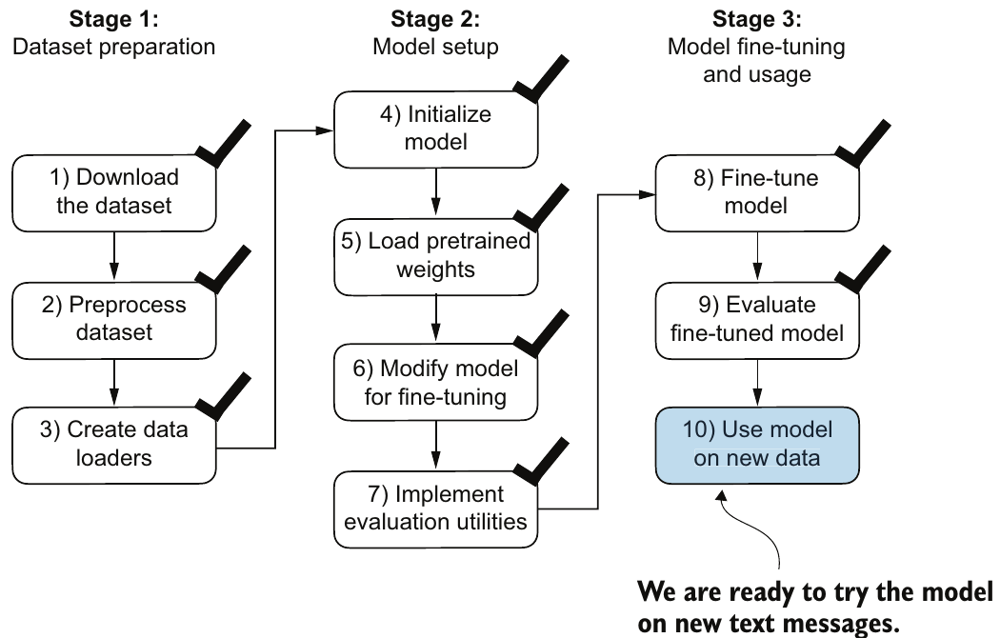
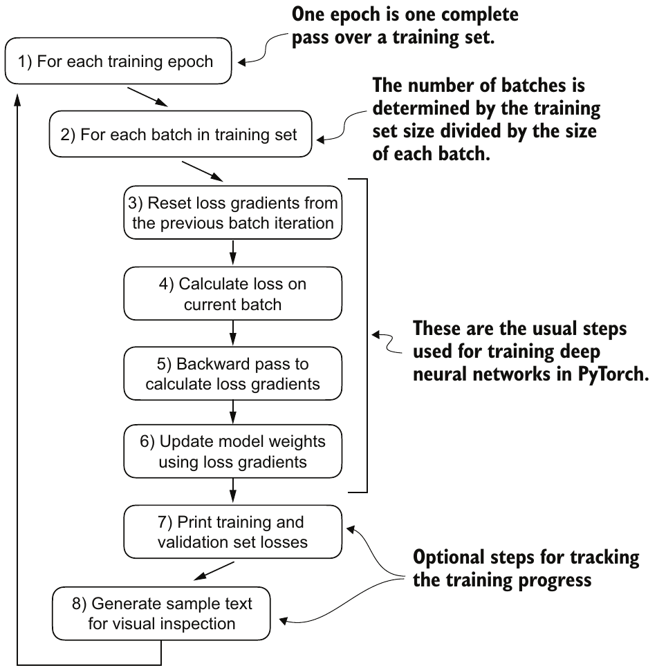
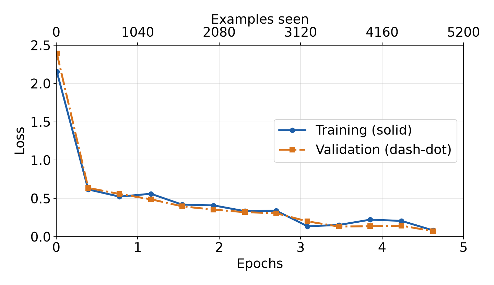
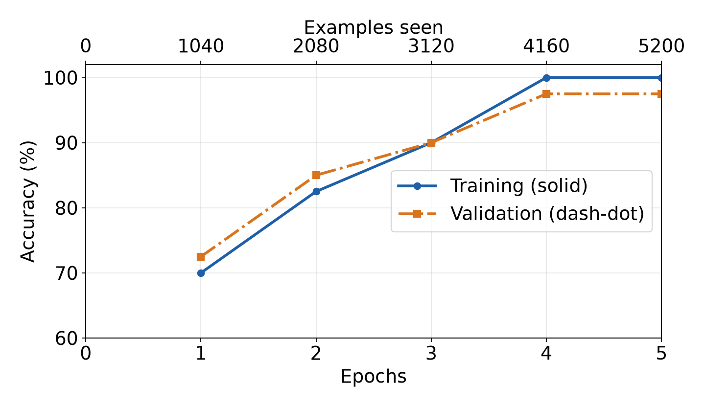

Outline
11주차에 분류 헤드를 붙인 GPT-2를 실제로 미세조정하고, 결과를 학습 기록·테스트 데이터·틀린 메시지로 판정한 뒤 새 문자 메시지 분류에 쓰기까지
| 선행 지식 | 선행 지식만으로 남는 문제 | 새로 배울 내용과 역할 |
|---|---|---|
| 학습 루프(9주차), 분류 헤드·학습 대상·분류 손실(11주차) | 준비만 끝난 상태, 분류 손실로 학습 대상만 갱신하는 반복은 미실행 | 분류 미세조정 실행(3~7장): 학습 함수 train_classifier_simple, 실제 학습 로그, 학습 대상만 바뀌고 동결 파라미터는 그대로인지 확인 |
| 손실 곡선과 과적합 판정(9주차), 정확도(11주차) | 학습 중 출력되는 손실·정확도의 뜻과 한계 미확인 | 학습 기록 해석(8~9장): 손실 곡선의 과적합 판정, 메시지 40개로 잰 정확도의 한계 |
| 학습 데이터·검증 데이터(9주차) | 학습에 쓴 메시지를 맞힌 결과 ≠ 처음 보는 메시지에서의 성능 | 미세조정 결과 평가(10~11장): 같은 메시지의 전후 비교, 테스트 데이터(학습에도 설정 판단에도 쓰지 않고 마지막 평가에만 쓰는 데이터)의 전체 정확도 |
| 정확도 = 맞힌 메시지 비율(11주차) | 정확도 하나로는 어느 클래스를 어느 쪽으로 틀렸는지 불명 | 오분류(예측이 레이블과 다른 메시지) 분석(12~13장): 정답 × 예측 개수표, 틀린 메시지의 공통점과 개선 가설 |
| 마지막 위치 logits의 argmax(11주차) | 데이터셋에 없는 새 메시지 1개의 입력 준비 방법 | 새 메시지 분류(14장): 분류 함수 classify_review |
스팸 분류기 강의 예제와 미세조정 출발 상태
공통 예제 = 문자 메시지 1개 → spam(원치 않는 광고·사기 문자) 또는 ham(정상 문자)을 답하는 분류기, 출발점 = 11주차에 준비를 마친 상태(아래 표), 최종 전달물 = 새 메시지를 넣으면 "spam"·"not spam"(= ham) 문자열을 돌려주는 분류 함수(14장)
| 데이터 | SMS Spam Collection(11주차)에서 ham·spam을 747개씩 맞춘 메시지 → 학습 데이터 1,045개(ham 528·spam 517), 검증 데이터 149개(ham 70·spam 79), 나머지 300개 = 11장에서 사용 |
|---|---|
| DataLoader | batch = 토큰 ID [메시지 8개, 자리 120개] + 레이블 [8](ham 0·spam 1), 120 = 학습 데이터 최장 메시지의 토큰 수(짧은 메시지는 뒤를 패딩 토큰 50256으로 채움), 학습 batch 130개(나머지 5개 버림, epoch마다 섞음)·검증 batch 19개 |
| 출발 모델 | 사전학습 GPT-2 124M + 분류 헤드 Linear(768, 2), 학습 대상 = 마지막 block·최종 LayerNorm·분류 헤드 7,090,946개(전체의 5.7%), 나머지 동결 |
| 학습 전 결과 | 정확도 학습 46.25%·검증 45.00%(앞 10 batch = 80개씩), 메시지 A·B 둘 다 spam 예측 |
| 추적 메시지(학습 데이터) | A "Ya just telling abt tht incident.." (ham) B "Congratulations U can claim 2 VIP …" (spam, … = 생략) |

교재 Figure 6.18(왼쪽 → 오른쪽): 세 묶음(데이터 준비·모델 설정·미세조정과 사용) 중 1~7단계 = 11주차까지, 8단계 "Fine-tune model"(미세조정)·9단계 "Evaluate fine-tuned model"(평가)·10단계 "Use model on new data"(새 데이터에 사용) = 이 강의, 체크 = 그림 시점에 끝난 단계, 파란 상자 = 남은 단계
분류 미세조정 학습 루프의 단계
단계 전환: 11주차 = 분류 헤드·학습 대상·평가 함수의 준비(파라미터 변화 없음) → 이 장부터 = 학습 데이터의 분류 손실이 줄도록 학습 대상 파라미터를 반복 갱신하는 미세조정 실행, 반복 골격 = 9주차 사전학습 학습 루프와 같음

교재 Figure 6.15: 위 → 아래 진행, 왼쪽 긴 화살표 = 다음 epoch로 복귀, 오른쪽 괄호 = batch마다 하는 3~6단계, 7·8단계 = 선택 단계
| 단계 | 9주차 사전학습 | 분류 미세조정 |
|---|---|---|
| 4) 손실 계산 | 모든 위치의 다음 토큰 cross_entropy | 마지막 위치 logits와 레이블의 분류 손실(11주차 calc_loss_batch: 9주차와 같은 이름, 마지막 위치만 사용) |
| 6) 파라미터 갱신 | 모든 파라미터 | requires_grad = True인 학습 대상 7,090,946개(전체의 5.7%)만 |
| 진행량 기록 | tokens_seen: 누적 학습 토큰 수 | examples_seen: 누적 학습 메시지 수 |
| 8) 진행 확인 | 샘플 텍스트 생성(그림 라벨 그대로) | epoch마다 학습·검증 정확도 계산으로 교체 |
- 1) epoch 반복·2) batch 반복·3) 기울기 초기화(
optimizer.zero_grad())·5) 역전파(loss.backward())·7) 학습·검증 손실 출력 = 9주차 그대로 - 8단계 교체 이유: 분류 모델의 출력 = 클래스 점수 2개라 이어 쓸 텍스트가 없음, 진행 확인 수단 = 맞힌 메시지 비율
학습 함수 train_classifier_simple의 기록 구조
3장 루프를 실행하는 학습 함수, 골격 = 9주차 train_model_simple, 파란 배경 줄 = 9주차 함수에서 바뀐 줄(덱의 강조)
def train_classifier_simple(model, train_loader, val_loader, optimizer, device,
num_epochs, eval_freq, eval_iter):
train_losses, val_losses, train_accs, val_accs = [], [], [], []
examples_seen, global_step = 0, -1
for epoch in range(num_epochs):
model.train()
for input_batch, target_batch in train_loader:
optimizer.zero_grad()
loss = calc_loss_batch(input_batch, target_batch, model, device)
loss.backward()
optimizer.step()
examples_seen += input_batch.shape[0]
global_step += 1
if global_step % eval_freq == 0:
…
train_accuracy = calc_accuracy_loader(train_loader, model, device, num_batches=eval_iter)
val_accuracy = calc_accuracy_loader(val_loader, model, device, num_batches=eval_iter)
…
train_accs.append(train_accuracy)
val_accs.append(val_accuracy)
return train_losses, val_losses, train_accs, val_accs, examples_seen- 발췌: 첫 … = 9주차와 같은 손실 기록(
evaluate_model), 둘째 … = 두 정확도 출력 - 9주차에서 없어진 부분:
tokens_seen누적과track_tokens_seen기록 목록(→ 메시지 수 누적으로 교체) examples_seen += input_batch.shape[0]: 갱신마다 batch의 메시지 수(8) 누적, 토큰 수 대신 분류의 판정 단위- epoch 끝
calc_accuracy_loader(11주차): 앞eval_iter개 batch로 학습·검증 정확도 계산, epoch당 1개씩 추가
eval_freq step마다)·정확도 기록 2개(epoch마다)·누적 메시지 수 → 5장의 실행 로그와 8·9장 곡선의 원본분류 미세조정 실행과 학습 로그
2장의 출발 모델을 4장의 학습 함수로 5 epoch 미세조정한 실제 실행(CPU, 학습 시간은 장치에 따라 다름)
start_time = time.time()
torch.manual_seed(123)
optimizer = torch.optim.AdamW(model.parameters(), lr=5e-5, weight_decay=0.1)
num_epochs = 5
train_losses, val_losses, train_accs, val_accs, examples_seen = train_classifier_simple(
model, train_loader, val_loader, optimizer, device,
num_epochs=num_epochs, eval_freq=50, eval_iter=5)
end_time = time.time()
print(f"Training completed in {(end_time - start_time) / 60:.2f} minutes.")time.time(): 현재 시각(초), 끝 − 시작 = 학습 시간(출력은 분 단위)- AdamW(9주차 optimizer),
lr=5e-5= 0.00005 = 9주차 처음부터 학습한 값 0.0004의 1/8, 이미 학습된 파라미터에서 출발해 1회 갱신 크기를 작게 잡은 설정,model.parameters()= 동결 파라미터까지 전부 전달(실제 갱신 범위는 7장) - 로그 읽기: Ep = epoch(1부터), Step = 0부터 센 갱신 번호(Step 0 = 첫 갱신 직후), Train loss·Val loss = 학습·검증 분류 손실, Training·Validation accuracy = 학습·검증 정확도
Ep 1 (Step 000000): Train loss 2.153, Val loss 2.392
Ep 1 (Step 000050): Train loss 0.617, Val loss 0.637
Ep 1 (Step 000100): Train loss 0.523, Val loss 0.557
Training accuracy: 70.00% | Validation accuracy: 72.50%
Ep 2 (Step 000150): Train loss 0.561, Val loss 0.489
Ep 2 (Step 000200): Train loss 0.419, Val loss 0.397
Ep 2 (Step 000250): Train loss 0.409, Val loss 0.353
Training accuracy: 82.50% | Validation accuracy: 85.00%
Ep 3 (Step 000300): Train loss 0.333, Val loss 0.320
Ep 3 (Step 000350): Train loss 0.340, Val loss 0.306
Training accuracy: 90.00% | Validation accuracy: 90.00%
Ep 4 (Step 000400): Train loss 0.136, Val loss 0.200
Ep 4 (Step 000450): Train loss 0.153, Val loss 0.132
Ep 4 (Step 000500): Train loss 0.222, Val loss 0.137
Training accuracy: 100.00% | Validation accuracy: 97.50%
Ep 5 (Step 000550): Train loss 0.207, Val loss 0.143
Ep 5 (Step 000600): Train loss 0.083, Val loss 0.074
Training accuracy: 100.00% | Validation accuracy: 97.50%
Training completed in 8.41 minutes.학습 기록의 step·epoch 대응
5장 로그의 Step 번호와 정확도 줄이 학습의 어느 시점·몇 개 메시지의 기록인지 읽기: step = batch 1개로 1회 갱신, epoch = 학습 batch 전체 1회 순회(9주차)
1,045개
(나머지 5개 제외)
1 epoch = 130 step
Step 0~649
| epoch | Step 범위 | 손실 기록 Step | 정확도 기록 |
|---|---|---|---|
| 1 | 0~129 | 0, 50, 100 | epoch 끝 1회 |
| 2 | 130~259 | 150, 200, 250 | epoch 끝 1회 |
| 3 | 260~389 | 300, 350 | epoch 끝 1회 |
| 4 | 390~519 | 400, 450, 500 | epoch 끝 1회 |
| 5 | 520~649 | 550, 600 | epoch 끝 1회 |
- 나머지 5개:
drop_last=True(4주차)로 8개를 못 채운 마지막 batch를 버림, 1 epoch에 쓰는 메시지 = 1,040개 - 손실 기록: Step 번호가 50의 배수일 때(
eval_freq=50) 13개, epoch 길이 130과 달라 epoch마다 2~3개 - 정확도 기록: epoch마다 1개, 합계 5개
examples_seen= 650 step × 8개 = 5,200개 = 메시지 1,040개를 5번 사용
기록 하나의 표본 크기: eval_iter=5 → 앞 batch 5개 = 메시지 40개, 학습 쪽 = 호출마다 새로 섞은 순서의 40개, 검증 쪽 = 섞지 않아 항상 같은 앞 40개(검증 데이터 149개 중)
미세조정 후 동결 파라미터와 학습 대상의 변화
5장의 optimizer에 파라미터 전부를 넘겼어도 갱신이 학습 대상 7,090,946개(block 12·최종 LayerNorm·분류 헤드)로 한정되는지 학습 전후 비교
w_block1 = model.trf_blocks[0].att.W_query.weight.detach().clone()
w_block12 = model.trf_blocks[-1].att.W_query.weight.detach().clone()
w_head = model.out_head.weight.detach().clone()
…
print("block1 W_query equal", torch.equal(w_block1, model.trf_blocks[0].att.W_query.weight))
print("block1 W_query grad", model.trf_blocks[0].att.W_query.weight.grad)
print("block12 W_query equal", torch.equal(w_block12, model.trf_blocks[-1].att.W_query.weight),
"max abs diff", f"{(w_block12 - model.trf_blocks[-1].att.W_query.weight).abs().max().item():.6f}")
print("out_head equal", torch.equal(w_head, model.out_head.weight),
"max abs diff", f"{(w_head - model.out_head.weight).abs().max().item():.6f}")
n_changed = sum(p.numel() for p in model.parameters() if p.grad is not None)
print("params with grad", n_changed)block1 W_query equal True
block1 W_query grad None
block12 W_query equal False max abs diff 0.025630
out_head equal False max abs diff 0.014672
params with grad 7090946- 앞 세 줄 = 학습 전에 실행, … = 5장의 학습 실행, 뒤 줄 = 학습 후 실행
.detach().clone(): 학습 전 값을 학습과 무관한 별도 사본으로 보관,att.W_query= 6주차 query 변환 행렬 W_Q의 파라미터torch.equal: 두 텐서의 모든 원소가 같으면 True(10주차), max abs diff = 원소별 차이 절댓값의 최댓값.grad(9주차): 역전파가 채운 기울기, None = 한 번도 기울기를 받지 않음
requires_grad = False)는 역전파에서 기울기를 받지 않아 .grad가 None으로 남고, AdamW는 .grad가 None인 파라미터를 건너뜀손실 곡선과 과적합 판정
단계 전환: 3~7장 = 미세조정 실행과 갱신 범위 확인 → 8~9장 = 실행이 남긴 기록으로 학습이 제대로 됐는지 판정, 먼저 손실 기록 13개의 곡선으로 과적합(9주차: 학습 손실만 줄고 검증 손실은 줄지 않거나 커지는 상태) 여부와 5 epoch의 적절성 판정

그림 읽기: 아래 축 Epochs = 기록 시점((Step + 1) ÷ 130 epoch, 마지막 기록 Step 600 ≈ 4.62 epoch), 위 축 Examples seen = 누적 학습 메시지 수, 파란 실선 = 학습 손실, 주황 점쇄선 = 검증 손실, 점 1개 = 메시지 40개로 잰 기록
| 구분 | 9주차 소설 학습 | 이 미세조정 |
|---|---|---|
| 학습 손실 | 9.781 → 0.391 | 2.153 → 0.083 |
| 검증 손실 | 9.933 → 최저 6.134 → 6.452 | 2.392 → 0.074(마지막 기록이 최저) |
| 판정 | 약 2 epoch 이후 과적합 | 두 곡선이 함께 감소, 과적합 신호 없음 |
- 학습 곡선의 작은 상승(Step 100 → 150: 0.523 → 0.561, Step 450 → 500: 0.153 → 0.222): 학습 쪽은 기록마다 다른 40개를 써서 생기는 표본 차이로 추정, 같은 40개를 쓰는 검증 곡선은 상승폭이 작음
- epoch 수 판단 기준: 검증 손실이 계속 내려가면 epoch 늘림 검토, 학습 손실만 내려가고 검증 손실이 오르면 줄임 → 이 실행(
num_epochs = 5) = 과적합이 나타나기 전에 종료
학습 중 정확도 기록의 해석
5장 로그의 정확도 100.00% = 학습 메시지 전부를 맞혔다는 뜻인지 판정: epoch 끝마다 메시지 40개로 잰 정확도 5개를 실제 기록 시점(epoch 1~5 끝)에 그린 곡선과 맞힌 수

그림 읽기: 점 = epoch 끝의 기록(epoch 1~5), 파란 실선 = 학습 정확도, 주황 점쇄선 = 검증 정확도, 세로축 Accuracy(%) = 정확도(백분율)
| epoch | 학습(맞힌 수/40) | 검증(맞힌 수/40) |
|---|---|---|
| 1 | 70.00% (28) | 72.50% (29) |
| 2 | 82.50% (33) | 85.00% (34) |
| 3 | 90.00% (36) | 90.00% (36) |
| 4 | 100.00% (40) | 97.50% (39) |
| 5 | 100.00% (40) | 97.50% (39) |
- 정확도 = 맞힌 수 × 2.5%(1 ÷ 40 = 0.025) → 값의 최소 간격 2.5%p(퍼센트포인트: 두 백분율 값의 차)
- 학습 100.00% = 그 epoch 끝에 새로 섞은 40개만 모두 맞힘, 나머지 학습 메시지 1,005개는 미확인
- 검증 97.50% = 늘 같은 앞 40개 중 1개 틀림, 나머지 검증 메시지 109개는 미확인
메시지 A·B의 미세조정 전후 비교
단계 전환: 8~9장 = 학습 중 표본 기록 해석 → 10~11장 = 끝난 모델의 결과 평가, 먼저 2장의 학습 데이터 1,045개에 든 같은 입력 A "Ya just telling abt tht incident.."(ham)·B "Congratulations U can claim 2 VIP …"(spam)를 학습 전후로 비교
| 메시지(레이블) | 시점 | logits [ham, spam] | softmax [ham, spam] | 예측 | 분류 손실 |
|---|---|---|---|---|---|
| A(0 = ham) | 학습 전 | [−2.3507, 2.6437] | [0.0067, 0.9933] | 1 = spam(틀림) | 5.0011 |
| 학습 후 | [3.5300, −2.4350] | [0.9974, 0.0026] | 0 = ham(맞음) | 0.0026 | |
| B(1 = spam) | 학습 전 | [−2.3161, 2.7413] | [0.0063, 0.9937] | 1 = spam(맞음) | 0.0063 |
| 학습 후 | [−2.8816, 4.1683] | [0.0009, 0.9991] | 1 = spam(맞음) | 0.0009 |
관찰
- A: ham 점수가 −2.3507 → 3.5300으로 올라 예측이 spam → ham으로 바뀜, 손실 5.0011 → 0.0026
- B: 예측은 그대로 spam, 정답 확률 0.9937 → 0.9991로 더 확신, 손실 0.0063 → 0.0009
말할 수 있는 범위
- A·B = 학습 데이터 → 미세조정 중 갱신에 쓰인 메시지, 맞힌 결과 = 학습한 메시지를 맞힌다는 사실까지
- 처음 보는 메시지에서도 맞히는지 = A·B로 판단 불가 → 11장의 학습에 쓰지 않은 메시지로 측정
테스트 데이터와 전체 데이터 정확도
처음 보는 메시지에서의 성능 = 학습에도 설정 판단(8장: 검증 손실로 5 epoch의 적절성 판정)에도 쓰지 않은 메시지로만 측정 → 테스트 데이터(test set): 2장의 나머지 300개(ham 149·spam 151), 미세조정이 끝난 뒤 마지막 평가에만 사용
train_accuracy = calc_accuracy_loader(train_loader, model, device)
val_accuracy = calc_accuracy_loader(val_loader, model, device)
test_accuracy = calc_accuracy_loader(test_loader, model, device)
print(f"Training accuracy: {train_accuracy*100:.2f}%")
print(f"Validation accuracy: {val_accuracy*100:.2f}%")
print(f"Test accuracy: {test_accuracy*100:.2f}%")Training accuracy: 97.21%
Validation accuracy: 97.32%
Test accuracy: 95.67%num_batches생략 = 기본값 None → DataLoader의 batch 전부 사용(11주차 함수의 규칙), 6장의 메시지 40개 표본이 아닌 데이터 전체test_loader: 테스트 메시지 300개를 길이 120으로 맞춘 DataLoader, batch 38개, 섞지 않음
| 데이터 | 메시지 | 미세조정에서의 쓰임 | 정확도(맞힌 수) |
|---|---|---|---|
| 학습 | 1,040개 | 파라미터 갱신 | 97.21%(1,011개) |
| 검증 | 149개 | 학습 중 기록, epoch 수 같은 설정 판단 | 97.32%(145개) |
| 테스트 | 300개 | 미사용, 이 장에서 처음 사용 | 95.67%(287개) |
- 학습 1,040개 = 섞은 순서에서
drop_last=True로 5개 제외, 학습 97.21% < 9장의 학습 표본 100.00% → 40개 표본값과 전체 값의 차이 확인 - 학습 − 테스트 = 1.54%p: 학습 메시지만 맞히고 처음 보는 메시지는 못 맞히는 과적합의 정도가 작음
- 검증 97.32% > 테스트 95.67%: 검증 데이터는 epoch 수 같은 설정 판단에 쓰여 설정이 검증 데이터에 맞춰졌을 수 있음(추론), 테스트 정확도 = 그런 영향이 없는 값
테스트 데이터의 정답 × 예측 개수표
단계 전환: 11장 = 맞힌 비율(정확도 95.67%) → 12~13장 = 틀린 13개의 오분류(예측이 레이블과 다른 메시지) 분석, 먼저 정답(= 레이블) 2가지 × 예측(spam 확률 > 0.5 = argmax와 같은 결과) 2가지 칸마다 테스트 메시지 수를 세어 오분류가 몰린 쪽 확인
p_spam = predict_all(ds)
labels = ds.data["Label"].tolist()
preds = [int(p > 0.5) for p in p_spam]
tn = sum(1 for y, p in zip(labels, preds) if y == 0 and p == 0)
fp = sum(1 for y, p in zip(labels, preds) if y == 0 and p == 1)
fn = sum(1 for y, p in zip(labels, preds) if y == 1 and p == 0)
tp = sum(1 for y, p in zip(labels, preds) if y == 1 and p == 1)
print(f"label ham: pred ham {tn}, pred spam {fp} | label spam: pred ham {fn}, pred spam {tp} | n {len(labels)}")label ham: pred ham 146, pred spam 3 | label spam: pred ham 10, pred spam 141 | n 300ds= 테스트 데이터셋(300개),predict_all= 메시지를 8개씩 모델에 넣어 마지막 위치 softmax의 spam 확률을 모은 목록을 돌려주는 보조 함수(입력 = 11장과 같은 길이 120)p > 0.5: 두 클래스 확률의 합 = 1이라 spam 확률 > 0.5 ⇔ argmax = 1(spam),zip= 레이블·예측 목록의 같은 위치 값을 짝지어 꺼냄, tn·fp·fn·tp = 오른쪽 표 네 칸의 개수(t·f = 예측이 맞음·틀림, p·n = spam·ham으로 예측)
| 레이블 \ 예측 | ham | spam | 합 |
|---|---|---|---|
| ham | 146(tn) | 3(fp) | 149 |
| spam | 10(fn) | 141(tp) | 151 |
| 합 | 156 | 144 | 300 |
- 정답 × 예측 개수표 = 흔히 혼동 행렬(confusion matrix)이라 부르는 표, 대각선 146 + 141 = 맞힌 287개, 파란 배경 두 칸 = 오분류 13개(덱의 강조)
- ham → spam 3개: 정상 문자가 스팸으로 분류되어 사용자가 못 볼 위험
- spam → ham 10개: 스팸이 정상 문자로 남음, 클래스별 맞힌 비율 spam 141/151 = 93.38%·ham 146/149 = 97.99%
오분류 메시지의 공통점과 개선 가설
12장의 오분류 13개를 원문으로 읽고 공통점을 개수로 확인(관찰) → 원인 가설과 확인 방법 정리, 가설 = 아직 실험하지 않은 추측
| 레이블 → 예측 | 메시지 원문(… = 생략) | spam 확률 |
|---|---|---|
| spam → ham | "Filthy stories and GIRLS waiting for your" | 0.0020 |
| spam → ham | "Money i have won wining number 946 wot do i do next" | 0.4428 |
| spam → ham | "Ringtone Club: Gr8 new polys direct to your mobile every week !" | 0.3779 |
| ham → spam | "NEFT Transaction with reference number … has been credited to the beneficiary account …"(송금 알림) | 0.7483 |
관찰(테스트 데이터에서 센 값)
- 5자리 이상 숫자열(전화번호·단축번호 등) 있는 spam 108개 → 놓침 0개, 없는 spam 43개 → 놓침 10개(오분류 spam 전부)
- 학습 데이터: spam 517개 중 406개에 5자리 이상 숫자열 있음, ham 528개 중 1개만 있음
- spam 확률 0.2~0.8(설명용 임의 경계) 사이 18개 중 9개 오분류, 나머지 282개 중 4개 오분류
개선 가설과 확인 방법
- 데이터 가설: 모델이 "5자리 이상 숫자열 = spam" 단서에 크게 의존 → 그 숫자열 없는 spam 예시를 학습 데이터에 추가, 확인 = 검증 데이터에서 그 숫자열 없는 spam의 놓침 수 비교
- 사용 규칙 가설: spam 확률 0.2~0.8 메시지 18개는 자동 판정 대신 사람 확인 → 이 테스트 데이터 기준 자동 판정 오분류 13개 → 4개, 경계는 검증 데이터로 결정
- 테스트 데이터 = 개선을 고르는 데 쓰지 않고 마지막 평가에만 남김(11장)
새 메시지 분류 함수 classify_review
단계 전환: 12~13장 = 오분류 분석(가설 확인은 다음 실험) → 14장 = 현재 모델을 새 메시지에 사용, 최종 전달물 classify_review = 새 메시지 1개 → "spam"·"not spam"(= ham) 반환 함수, 사용자 = 메시지 필터 프로그램
def classify_review(text, model, tokenizer, device, max_length=None, pad_token_id=50256):
model.eval()
input_ids = tokenizer.encode(text)
supported_context_length = model.pos_emb.weight.shape[0]
input_ids = input_ids[:min(max_length, supported_context_length)]
input_ids += [pad_token_id] * (max_length - len(input_ids))
input_tensor = torch.tensor(input_ids, device=device).unsqueeze(0)
with torch.no_grad():
logits = model(input_tensor)[:, -1, :]
predicted_label = torch.argmax(logits, dim=-1).item()
return "spam" if predicted_label == 1 else "not spam"
print(classify_review(text_1, model, tokenizer, device, max_length=train_dataset.max_length))
print(classify_review(text_2, model, tokenizer, device, max_length=train_dataset.max_length))spam
not spam| text_1 | "You are a winner you have been specially selected to receive $1000 cash or a $2000 award." (토큰 20개) |
|---|---|
| text_2 | "Hey, just wanted to check if we're still on for dinner tonight? Let me know!" (토큰 19개) |
- 자르기:
supported_context_length=pos_emb(위치마다 벡터 1개를 담은 위치 임베딩 표)의 행 수 1,024,min(120, 1024)→ 120 초과분만 잘림 - 패딩: text_1 뒤에 패딩 토큰 ID 50256(<|endoftext|>, 2장과 같은 빈 자리 채움) 100개 → 길이 120,
unsqueeze(0)로 [1, 120] - 패딩 이유: 학습 때 입력 = 길이 120 패딩 메시지 → 같은 형태여야 학습한 판정 적용, 테스트 300개: 120 패딩 95.67% 대 패딩 없음 50.33%(모두 spam 예측), text_2 spam 확률(softmax의 spam 칸) 0.0195 대 0.9998
Summary
분류 미세조정 실행과 결과 분석의 흐름: 학습 루프 실행 → 학습 기록 해석 → 테스트 데이터 평가 → 오분류 분석 → 새 메시지 분류
| 개념 | 확인한 역할과 구분 |
|---|---|
| 분류 미세조정 학습 루프 | 9주차 학습 루프에서 손실(마지막 위치 분류 손실)·갱신 범위(학습 대상 = 전체 파라미터의 5.7%)·진행 기록(메시지 수·epoch별 정확도)만 바꾼 train_classifier_simple |
| 미세조정 실행 | AdamW(lr 5e-5) 5 epoch = 650 step, 학습 손실 2.153 → 0.083, 기울기를 받은 파라미터 = 학습 대상 7,090,946개, 동결 파라미터는 불변 |
| 학습 기록 해석 | 로그의 손실·정확도 = 메시지 40개 표본값, 학습·검증 손실이 함께 감소 = 과적합 신호 없음, 학습 표본 정확도 100.00% ≠ 전체 100% |
| 결과 평가 | 같은 메시지 A의 예측이 spam → ham으로 바로잡힘(학습 메시지라 일반화 증거 아님), 테스트 데이터 = 마지막 평가 전용, 학습 97.21%·검증 97.32%·테스트 95.67% |
| 오분류 분석 | 정답 × 예측 개수표: ham → spam 3개·spam → ham 10개, 놓친 spam 10개 전부 5자리 이상 숫자열 없음 → 그 숫자열 의존 가설, 확인은 검증 데이터로 |
| 새 메시지 분류 | classify_review: 토큰화 → 토큰 120개로 자르기·패딩 → 마지막 위치 argmax → "spam"·"not spam"(= ham), 패딩 없이 넣으면 테스트 정확도 50.33% |